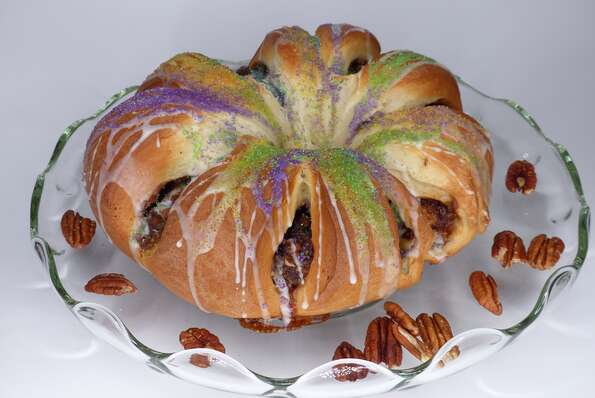

Mardi Gras King Cake

Description
The King Cake is a New Orleans tradition that involves a pastry, a small plastic baby, and a party. The King Cake is baked with a small plastic baby hidden inside, the person who gets the slice with baby in it has to host the next party.
Recipes
Pastry:
- Milk [1 cup]
- Butter [1 cup]
- Dry Yeast [2 packages]
- Warm Water [2/3 cup, 45°C]
- White Sugar [1/2 cup]
- Eggs [2 pcs]
- Salt [1 tsp]
- Nutmeg [1/2 tsp, grated]
- All-purpose lour [5 cups]
Filling:
- Brown Sugar [1 cup]
- Ground Cinnamon [1 tbsp]
- Pecans [2/3 cup, chopped]
- All-purpose flour [1/2 cup]
- Raisins [1/2 cup]
- Butter [1/2 cup, melted]
Frosting:
- Confectioners' Sugar [1 cup]
- Water [1 tbsp]
Steps
- Scald milk, remove from heat and stir in 1/4 cup of butter. Allow mixture to cool to room temperature. In a large bowl, dissolve yeast in the warm water with 1 tablespoon of the white sugar. Let stand until creamy, about 10 minutes.
- When yeast mixture is bubbling, add the cooled milk mixture. Whisk in the eggs. Stir in the remaining white sugar, salt and nutmeg. Beat the flour into the milk/egg mixture 1 cup at a time. When the dough has pulled together, turn it out onto a lightly floured surface and knead until smooth and elastic, about 8 to 10 minutes.
- Lightly oil a large bowl, place the dough in the bowl and turn to coat with oil. Cover with a damp cloth or plastic wrap and let rise in a warm place until doubled in volume, about 2 hours. When risen, punch down and divide dough in half.
- Preheat oven to 375 degrees F (190 degrees C). Grease 2 cookie sheets or line with parchment paper.
- To Make Filling: Combine the brown sugar, ground cinnamon, chopped pecans, 1/2 cup flour and 1/2 cup raisins. Pour 1/2 cup melted butter over the cinnamon mixture and mix until crumbly.
- Roll dough halves out into large rectangles (approximately 10x16 inches or so). Sprinkle the filling evenly over the dough and roll up each half tightly like a jelly roll, beginning at the wide side. Bring the ends of each roll together to form 2 oval shaped rings. Place each ring on a prepared cookie sheet. With scissors make cuts 1/3 of the way through the rings at 1 inch intervals. Let rise in a warm spot until doubled in size, about 45 minutes.
- Bake in preheated oven for 30 minutes. Push the doll into the bottom of the cake. Frost while warm with the confectioners' sugar blended with 1 to 2 tablespoons of water.
Reference